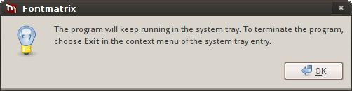

When you change your fonts collection or switch available font sets rather frequently, it probably doesn't make much sense having Fontmatrix window around all the time. So you can close the main window to system tray and do some actions from there.
Show Fontmatrix in System Tray option enables or disables the whole system tray related functionality.
If you enable the Close to system tray checkbox, every time you click the closing button of main window, Fontmatrix will hide in system tray. The first time you do it, a warning message will be displayed.

You have two ways of restoring the main window: either single clicking with left mouse button on the Fontmatrix's icon in the system tray, or right clicking there with subsequent choosing of "Restore" menu item. The "Minimize" menu item will close the main window to the system tray.
Start minimized to system tray option is useful when you want Fontmatrix around all the time to manage your collection, but don't need it on start up immediately.
Show "All" actions option adds two items to the system tray menu. Those are "Activate all" and "Deactivate all". As self-explanatory as they are, they make all the fonts known to Fontmatrix either available or not available in the system.
Ask confirmation when activating or deactivating all fonts option, related to the previous option, should rather be disabled unless you really know what you are doing.
Ask confirmation when activating or deactivating fonts by tags option will make Fontmatrix ask your for confirmation when you make a set of fonts that are grouped by tags either visible or invisible in the system. When you rightclick the application's icon in the system tray, all available tags are listed in "Tags" submenu. See the chapter on tags for details.